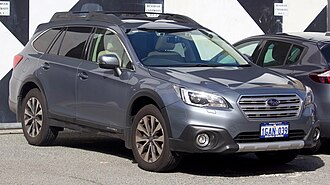
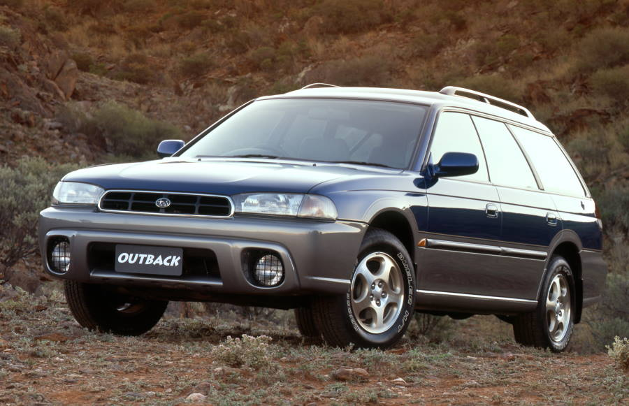
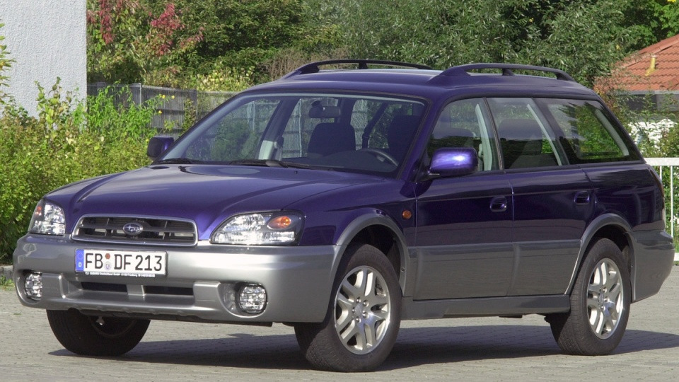
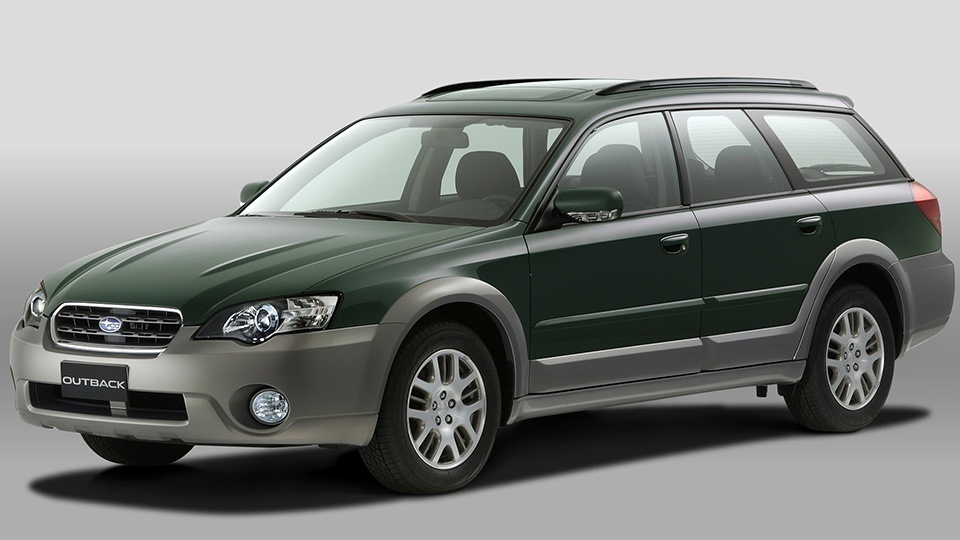
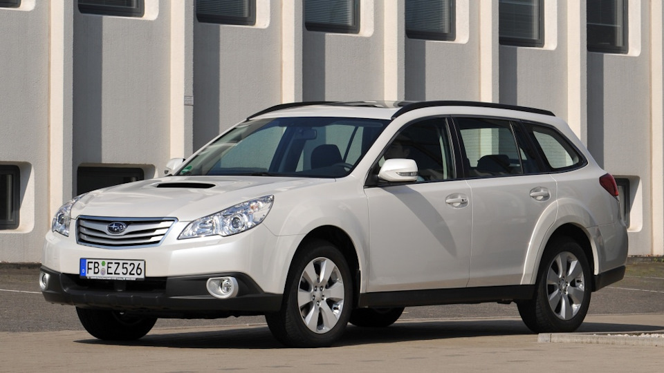
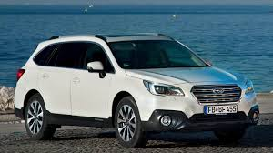
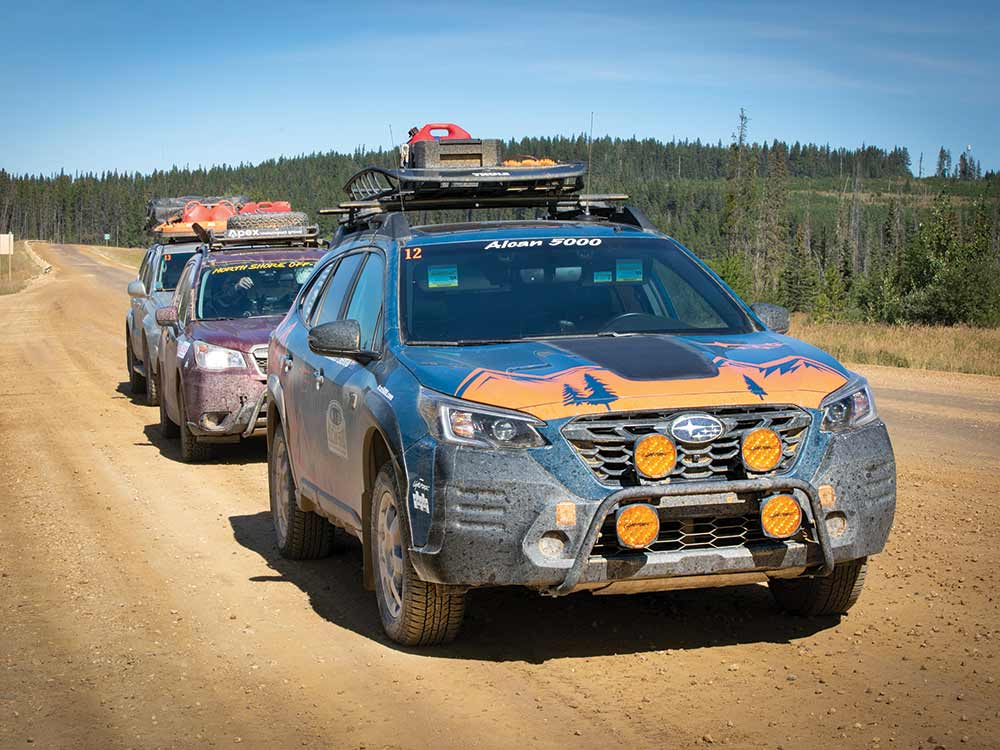
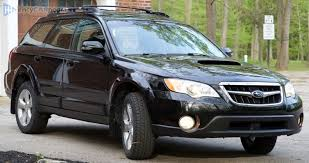

Back to main
Subaru Outback — кроссовер (CUV) японской фирмы Subaru, выпускается с 1995 года. Ранняя модель была построена на базе шасси Subaru Legacy. Как и подавляющее большинство моделей этой компании, Outback имеет полный привод.
Модель позаимствовала название Outback (букв. «задворки») у австралийских аутбэков — удалённых и засушливых местностей. Автомобили Subaru Outback, как и другие модели марки Subaru, участвовали и побеждали во многих международных соревнованиях.

Содержание
В конце 1996 г. был предложен внедорожный вариант Legacy, который был назван в первой версии Legacy Outback. На американском рынке также была версия Outback с кузовом седан.

Второе поколение Outback было представлено в конце 1999 года как самостоятельная модель, без приставки Legacy. Выпускалось в кузовах универсал, седан и пикап (модель Subaru Baja для американского рынка). Устанавливались оппозитные 4-цилиндровые двигатели объёмом 2,0 (135 л. с.) и 2,5 л (156 л. с.), а также шестицилиндровый двигатель объёмом 3,0 л (209 л. с.).

Осенью 2003 года был представлен новый Outback, который был основан на четвёртой серии Legacy. В отличие от предшественников, Outback-III штатно оснащался ABS и подушками безопасности, мощность 4-цилиндровых и 6-цилиндровых оппозитных моторов повысилась до 165 и 250 лошадиных сил соответственно.

В сентябре 2008 года Subaru представила на рынок четвёртое поколение Outback.

В апреле 2014 года на Международном автосалоне в Нью-Йорке компания Subaru официально представила Outback пятого поколения. На автомобиль установлена новая система безопасности EyeSight, которая контролирует рядность движения, «мёртвую» зону и способна распознать несколько объектов, включая пешеходов. Продажи Outback в России начались весной 2015 года.

Автомобили Subaru Outback дважды были победителями ралли Alcan Rally — длительной гонки, стартующей в городе Сиэтл штата Вашингтон к Полярному кругу и обратно. Outback выигрывал эту гонку в 2002 году (экипаж — Gary Webb, Richard Mooers и John Kisela) и в 2006 году (экипаж — Revere Jones, Brian Deno и Tom Gould).

С марта 2008 года начался выпуск дизельного оппозитного двигателя для моделей Legacy и Outback. Доступна только 5-ступенчатая механическая коробка передач. C 2009 года дизельные машины комплектуются 6-скоростной механической КПП.
С весны 2013 года на рынке появилась также версия с вариатором Lineartronic.
Модель 2.5i 2008 года для рынка США была сертифицирована по категории выбросов PZEV, все остальные модели сертифицированы по LEV2. Модель PZEV Outback продаётся в любом штате США, в отличие от прочих производителей, предлагающих подобные авто только в штатах, принявших Калифорнийскую сертификацию.

Получил всероссийскую премию "Лучший автомобиль 2022 года в классе универсалы повышенной проходимости"